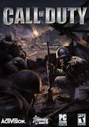
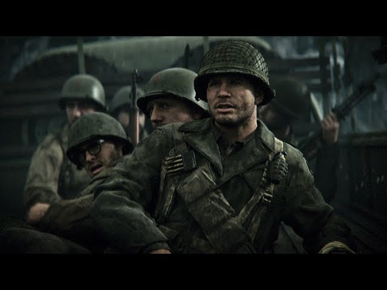

Como o foco do jogo é a simulação de um campo de batalha real, a jogabilidade diferiu de muitos jogos de tiro da época.
Qual é a história do jogo Call of Duty? O primeiro ano em que o jogo remonta é 1940, mas a maior parte da história ocorre entre 1944 e 1945. A história segue o soldado Ronald “Red” Daniels e seu esquadrão de infantaria enquanto tentam acabar com os nazistas no final da Segunda Guerra Mundial.
